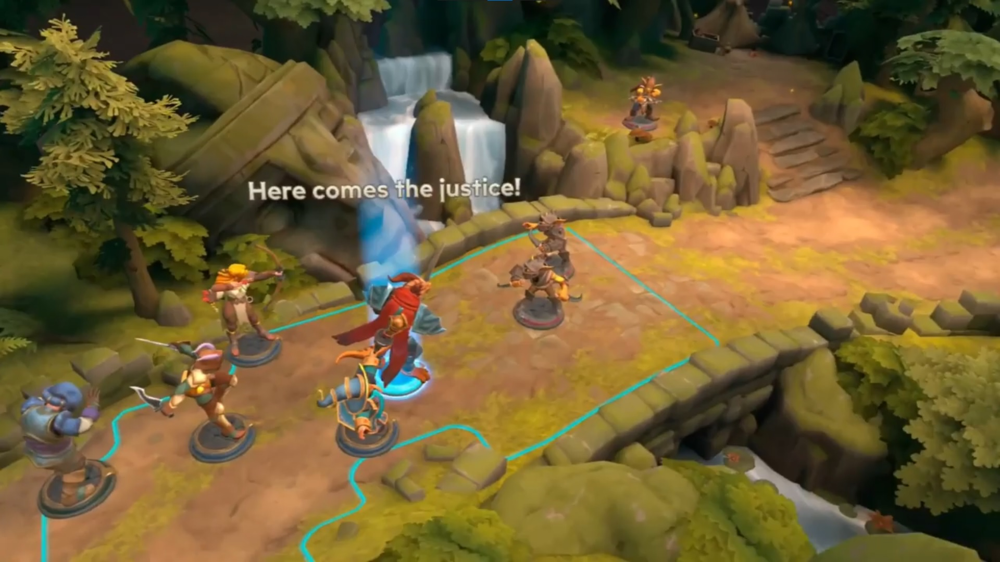
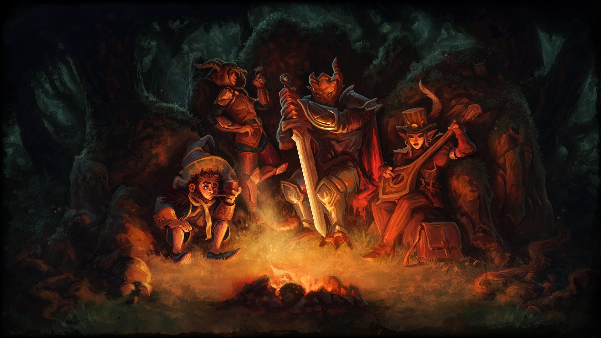
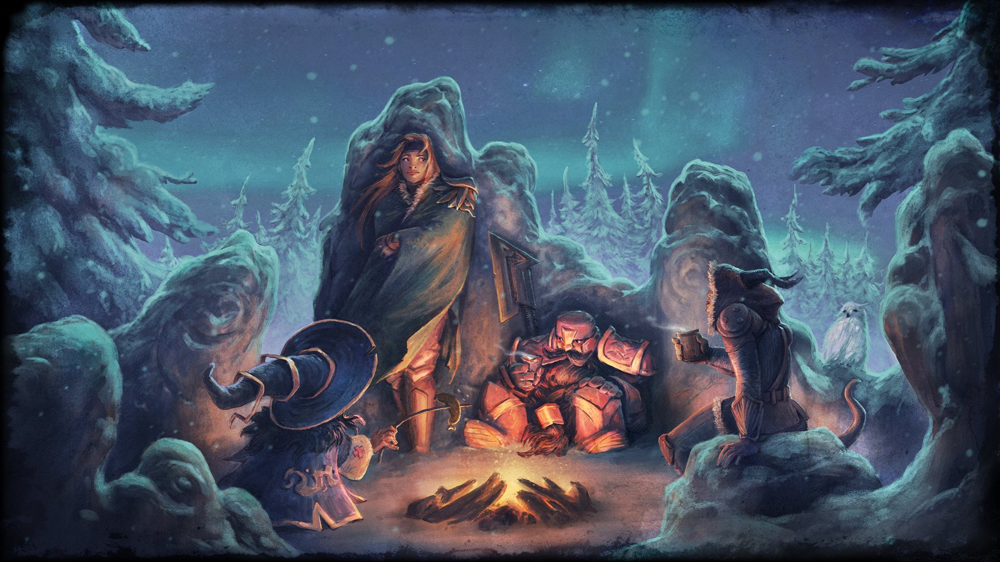
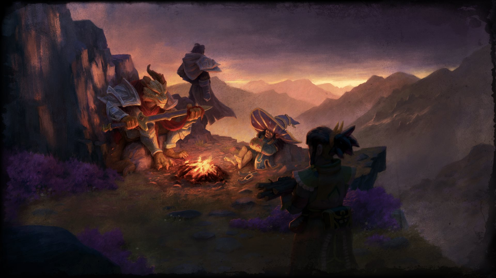
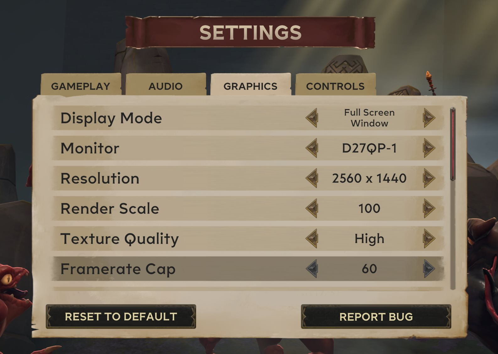

Game Info
Experience the magic of Dungeons & Dragons like never before in the fantasy tabletop adventure, Demeo x Dungeons & Dragons: Battlemarked.
Gather your party, unravel sinister plots, and forge mighty alliances in turn-based combat and choice-based storytelling set in the Dungeons & Dragons world of the Forgotten Realms.
Platforms
Virtual Reality
TODO: tagline

TODO: describe what you built and why.
Platforms
Mixed Reality
TODO: tagline
TODO: describe what you built and why.
Platforms
PlayStation 5
From port to live game
Once the port was complete, I took over responsibility for the PlayStation 5 version.
I guided the game through Sony's certification process for updates that added paid downloadable content and new localisations.
Features
Hand Tracking
Put down the controllers
I implemented hand tracking using OpenXR, building on the same foundation as the rest of the game's VR implementation.
Locomotion is driven by hand gestures, with the logic to move, rotate, scale and tilt the view using only your hands.
Pieces and dice can be manipulated in three ways: directly by grabbing them with your hands, indirectly with a laser pointer cast from the hand, or by poking them. The UI supports both the laser pointer and poke interactions.
Features
Spatial Anchors
One table, one shared board
Players in the same physical space can share the virtual game board.
The board can be placed on top of a real table, and it stays aligned to that table for everyone in the room, so players can gather around it just like a physical board game.
Features
Networking
TODO: tagline
TODO: describe what you built and why.
Features
Intro
First impressions on every platform
I set up a system that plays a different intro video depending on the platform.
In VR, the video appears in front of the player when it starts and then stays anchored in place, rather than following their head.
Features
Loading Screen
Smooth transitions



I implemented the loading screens used throughout the game.
Moving between menu scenes fades to black, while loading into a new gameplay level shows artwork that matches the current campaign or level.
Features
Settings
Play it your way

I implemented the game's settings for both PC and VR.
On PC, players can adjust resolution, display mode, monitor, V-Sync, frame rate limit and render scale, along with a range of visual settings.
In VR, the settings cover the laser pointer and its snapping, the environment, passthrough, colocation and local anchor mode.
I also extended the settings UI so each option comes with a description and an image showing what it does.
Features
Accessibility
Easy on the neck
Tilt is a VR feature that reduces neck strain, since the gameplay takes place on a game board below you.
Building on my earlier work on Demeo, I ported the feature to Battlemarked. It needed some small changes and support for new objects, but works much the same: the tilt motion is animated, the environment can be shown or hidden, and locomotion works as expected at any angle.